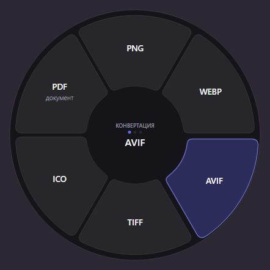
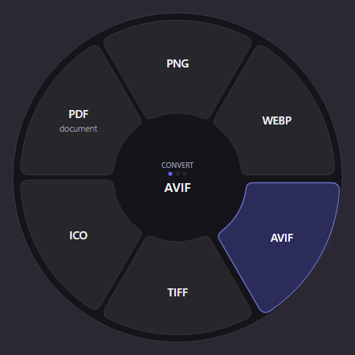
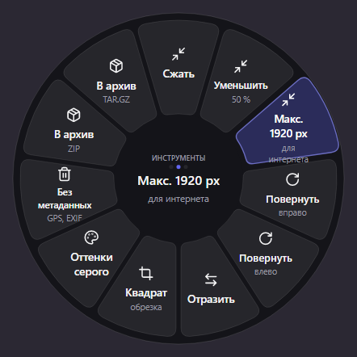
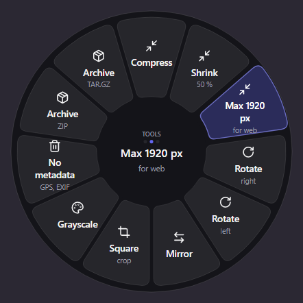
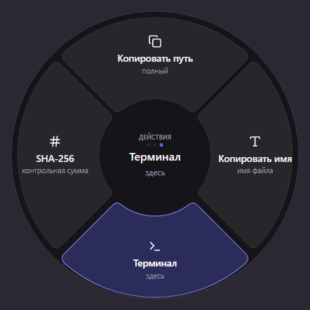
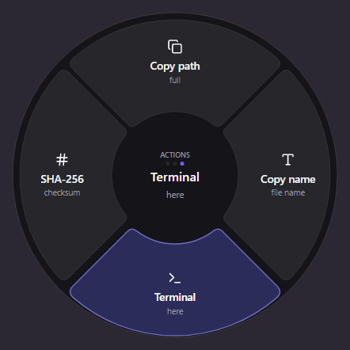

Выделите файлы в Проводнике и нажмите Ctrl Alt Space. Колесо откроется под курсором и покажет только то, что подходит выделенному. Щёлкните сектор — результат ляжет рядом с исходником.
Select files in Explorer and press Ctrl Alt Space. The wheel opens under the cursor, showing only what fits the selection. Click a slice and the result lands next to the original.
При запуске Windows предупредит: Konvir пока не подписан. Почему и как сверить загрузку — написано прямо.
Windows warns on first run: Konvir is not signed yet. Why, and how to check your download, is said plainly.
Ни один файл никуда не отправляется
Изображения, аудио, видео, PDF, документы, таблицы, презентации, субтитры и архивы — всё считается на вашей машине.
No file is ever uploaded anywhere
Images, audio, video, PDF, documents, spreadsheets, slides, subtitles and archives — everything runs on your machine.
Между ними переключают Tab и колёсико мыши. Колесо, которому нечего предложить, не показывается вовсе, так что любой доступный сектор что-то делает.
Tab or the scroll wheel switches between them. A wheel with nothing to offer is never shown, so every slice you can reach does something.


Один формат в другой.
One format into another.


Сжать, уменьшить, повернуть, убрать метаданные, упаковать.
Compress, resize, rotate, strip metadata, archive.


Копировать путь и имя, открыть терминал, SHA-256.
Copy path, copy name, open a terminal, SHA-256.
Свои секторы. Пресет — это конвертация, описанная один раз: «Web 1920» как JPEG качества 82 с вычищенными метаданными или «Подкаст» как MP3 128 кбит/с. Каждый становится отдельным сектором с вашим названием, а результат называется по нему: photo (Web 1920).jpg.
Your own slices. A preset is a conversion you describe once: “Web 1920” as JPEG at quality 82 with the metadata stripped, or “Podcast” as 128 kbit/s MP3. Each becomes a slice of its own, named by you, and the results are named after it: photo (Web 1920).jpg.
Изображения, PDF, таблицы, субтитры и архивы работают без единой установки. Медиа и офисные форматы обрабатывают FFmpeg, Pandoc и LibreOffice — Konvir ставит их по кнопке, от их собственных авторов.
Images, PDF, spreadsheets, subtitles and archives work with nothing installed. Media and office formats are handled by FFmpeg, Pandoc and LibreOffice, which Konvir installs at the press of a button, from their own publishers.
14 дней Konvir конвертирует всё без ограничений. Дальше нужен ключ — он выдаётся на один компьютер и проверяется прямо на нём, поэтому Konvir работает без интернета.
For 14 days Konvir converts everything without limits. After that it needs a key. A key is issued for one computer and checked on that computer, so Konvir works offline.
Оплата на сайте ещё подключается. Пока ключи выдаются вручную: напишите, приложите код устройства из Настройки → Лицензия, и ключ придёт в ответ.
Payment on this site is still being set up. For now keys are issued by hand: get in touch, include the device code from Settings → Licence, and the key comes back by reply.